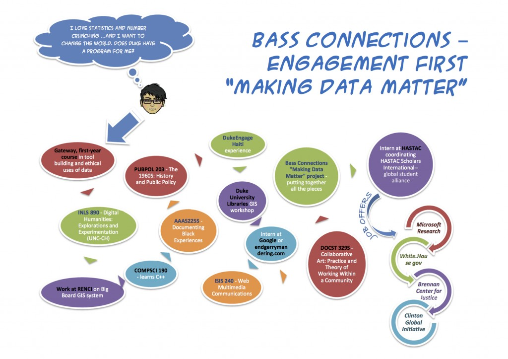

So what is Making Data Matter?

Participate in a student- and citizen-led crowdsourcing project that will create access and collaborative opportunities around historically and socially-significant heterogeneous datasets rooted in urban renewal housing records of the Southside neighborhood in Asheville, NC, a historically African-American community. In the Making Data Matter project, the project team will focus on designing new tools and methods for social engagement, use primary sources and big data to inform ethical urban planning, and work as a collaborative, interdisciplinary team on active research.